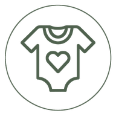

<!DOCTYPE html>
<html lang="az">
<head>
<meta charset="utf-8">
<meta name="viewport" content="width=device-width, initial-scale=1.0">
<link rel="icon" href="/favicon.ico" sizes="any">
<link rel="icon" href="/favicon-32.png" type="image/png" sizes="32x32">
<link rel="apple-touch-icon" href="/apple-touch-icon.png">
<link rel="manifest" href="/site.webmanifest">
<meta name="theme-color" content="#4f614e">
<title>Bloq - Bodi.az</title>
<script src="https://cdn.tailwindcss.com?plugins=forms,container-queries"></script>
<link rel="preconnect" href="https://fonts.googleapis.com">
<link rel="preconnect" href="https://fonts.gstatic.com" crossorigin>
<link href="https://fonts.googleapis.com/css2?family=Plus+Jakarta+Sans:wght@400;500;600;700;800&display=swap" rel="stylesheet">
<link href="https://fonts.googleapis.com/css2?family=Material+Symbols+Outlined:wght,FILL@100..700,0..1&display=block" rel="stylesheet">
<link rel="stylesheet" href="assets/css/styles.css?v=2.8.0">
<script src="assets/js/tw-config.js?v=2.1.0"></script>
</head>
<body class="bg-background text-on-surface font-body min-h-screen flex flex-col">

<div id="site-header"></div>

<main class="flex-grow w-full max-w-3xl mx-auto px-4 md:px-gutter py-md md:py-xl">
  <nav aria-label="Breadcrumb" class="mb-lg">
    <ol class="flex items-center gap-2 font-body-sm text-body-sm text-on-surface-variant flex-wrap" id="crumbs"></ol>
  </nav>

  <article id="post-root"></article>

  <div class="mt-xl pt-lg border-t border-surface-variant flex items-center gap-3" id="share"></div>
</main>

<div id="site-footer"></div>
<div id="mobile-nav"></div>

<script src="assets/js/products.js?v=3.2.0"></script>
<script src="assets/js/api.js?v=3.1.0"></script>
<script src="assets/js/store.js?v=3.1.0"></script>
<script src="assets/js/layout.js?v=2.6.0"></script>
<script>
(function () {
  const POSTS = {
    "korp-ilk-gunler": { cat: "Yeni doğulanlar", title: "Körpə üçün ilk günlərdə necə qulluq etməli?", read: 5, date: "15 Okt 2024", color: "cream" },
    "niye-org-pambiq": { cat: "Geyim", title: "Niyə orqanik pambıq seçməlisiniz?", read: 4, date: "10 Okt 2024", color: "sage" },
    "cimmek-rutini": { cat: "Qulluq", title: "Rahatladıcı çimmək rutini necə yaradılmalı?", read: 6, date: "05 Okt 2024", color: "sky" },
    "emzirme-yararli-maslahetler": { cat: "Qidalanma", title: "Emzirmə zamanı faydalı məsləhətlər", read: 7, date: "28 Sentyabr 2024", color: "peach" },
    "uyku-duzeni": { cat: "Qulluq", title: "Körpədə sağlam yuxu düzeni qurmaq", read: 5, date: "20 Sentyabr 2024", color: "lavender" },
    "geyim-olcu-secimi": { cat: "Geyim", title: "Doğru geyim ölçüsünü necə seçməli?", read: 4, date: "12 Sentyabr 2024", color: "beige" },
    "ilk-beden-mexsusiyetleri": { cat: "Yeni doğulanlar", title: "Yeni doğulanın bədən xüsusiyyətləri", read: 6, date: "04 Sentyabr 2024", color: "rose" },
    "ekoloji-bebek-giyim": { cat: "Geyim", title: "Ekoloji və davamlı körpə geyimi", read: 5, date: "28 Avqust 2024", color: "mustard" },
    "dovshe-qudasinda-dikkat": { cat: "Qidalanma", title: "Əlavə qidalara keçiddə diqqət edilməli olanlar", read: 7, date: "15 Avqust 2024", color: "terracotta" }
  };
  const slug = new URLSearchParams(location.search).get("b");
  const p = POSTS[slug] || { cat: "Bloq", title: "", read: 3, date: "", color: "cream" };

  document.getElementById("crumbs").innerHTML = `
    <li><a class="hover:text-primary transition-colors" href="index.html">Ana səhifə</a></li>
    <li><span class="material-symbols-outlined" style="font-size:16px">chevron_right</span></li>
    <li><a class="hover:text-primary transition-colors" href="blog.html">Bloq</a></li>
    <li><span class="material-symbols-outlined" style="font-size:16px">chevron_right</span></li>
    <li aria-current="page" class="text-primary font-medium clamp-2">${p.title}</li>`;

  document.getElementById("post-root").innerHTML = `
    <span class="inline-block bg-primary-fixed/40 text-primary font-label-sm text-label-sm px-3 py-1 rounded-full mb-md">${p.cat}</span>
    <h1 class="font-display-lg-mobile md:text-display-lg text-display-lg-mobile md:font-display-lg text-on-surface tracking-tight leading-tight mb-md">${p.title}</h1>
    <div class="flex flex-wrap items-center gap-x-3 gap-y-1 font-body-sm text-body-sm text-on-surface-variant mb-lg">
      
      <span class="whitespace-nowrap">Bodi.az Redaksiya</span><span>•</span>
      <span class="whitespace-nowrap flex items-center gap-1"><span class="material-symbols-outlined" style="font-size:16px">schedule</span>${p.read} dəq oxu</span><span>•</span><span class="whitespace-nowrap">${p.date}</span>
    </div>
    
    <div class="prose post-content font-body-lg text-body-lg text-on-surface-variant space-y-md leading-relaxed">
      <p>Hər valideyn övladı üçün ən yaxşısını istəyir. Bu məqalədə sizin üçün ən aktual mövzunu sadə, anlaşıqlı və praktik şəkildə izah etməyə çalışırıq.</p>
      <p>Bodi.az olaraq inanırıq ki, məlumatlı valideyn daha rahat və arxayın olur. Buna görə də mütəxəssislərimizin tövsiyələrini və real həyat təcrübələrini bir araya gətirərək sizə təqdim edirik.</p>
      <h2 class="font-headline-md text-headline-md text-on-surface mt-lg">Əsas məqamlar</h2>
      <p>İlk növbədə, körpənizin ehtiyaclarına diqqətlə yanaşın. Hər uşaq fərqlidir və özünəməxsus templə inkişaf edir. ən vacib şey — sevgi, səbir və ardıcıl qayğıdır.</p>
      <ul class="list-disc pl-lg space-y-2">
        <li>Həssas dəri üçün yalnız təbii materiallardan hazırlanmış məhsullar seçin.</li>
        <li>Mütəmadi olaraq pediatrınızla əlaqədə qalın.</li>
        <li>Körpənizin rahatlığı üçün düzgün ölçü və mövsümə uyğun geyim önəmlidir.</li>
      </ul>
      <blockquote class="border-l-4 border-primary pl-md italic text-on-surface">"Hər toxunuşda sevgi və hər addımda qayğı — körpənizin xoşbəxtliyinin sirri budur."</blockquote>
      <h2 class="font-headline-md text-headline-md text-on-surface mt-lg">Nəticə</h2>
      <p>Unutmayın, mükəmməl valideyn yoxdur — ancaq sevgi və diqqətlə hər şeyə nail olmaq mümkündür. Əlavə suallar üçün komandamız hər zaman sizinlədir.</p>
    </div>
    <a href="category.html?cat=bodi" class="inline-flex mt-lg items-center gap-2 bg-primary text-on-primary font-label-md text-label-md px-6 py-3 rounded-xl hover:bg-primary-container transition-colors">
      Məhsullarımıza baxın <span class="material-symbols-outlined" style="font-size:18px">arrow_forward</span>
    </a>`;

  document.getElementById("share").innerHTML = `
    <span class="font-label-md text-label-md text-on-surface">Paylaş:</span>
    <a href="#" onclick="return STORE.toast('Link kopyalandı','link')" class="w-10 h-10 rounded-full bg-surface-container flex items-center justify-center text-on-surface-variant hover:text-primary hover:bg-primary-fixed/30 transition-colors"><span class="material-symbols-outlined">share</span></a>
    <a href="#" onclick="return STORE.toast('Link kopyalandı','link')" class="w-10 h-10 rounded-full bg-surface-container flex items-center justify-center text-on-surface-variant hover:text-primary hover:bg-primary-fixed/30 transition-colors"><span class="material-symbols-outlined">mail</span></a>
    <a href="#" onclick="return STORE.toast('Link kopyalandı','link')" class="w-10 h-10 rounded-full bg-surface-container flex items-center justify-center text-on-surface-variant hover:text-primary hover:bg-primary-fixed/30 transition-colors"><span class="material-symbols-outlined">link</span></a>`;
  if (window.BODI_API) {
    BODI_API.fetchPosts().then(posts => {
      const match = posts.find(x => x.slug === slug);
      if (match) {
        const root = document.getElementById("post-root");
        if (root) {
          const prose = root.querySelector(".post-content");
          if (prose && match.content) {
            prose.innerHTML = match.content;
            // Images placed in the admin editor: lazy, responsive, never overflowing the column.
            prose.querySelectorAll("img").forEach(img => { img.loading = "lazy"; img.decoding = "async"; if (!img.alt) img.alt = match.title; });
          }
          const h1 = root.querySelector("h1");
          if (h1) h1.textContent = match.title;
          const chip = root.querySelector("span.inline-block");
          if (chip) chip.textContent = match.cat;
          // The cover is #post-cover (the first  in the block is the author avatar).
          const cover = document.getElementById("post-cover");
          const coverSrc = match.imageLarge || match.image;
          if (cover) {
            if (coverSrc) { cover.src = coverSrc; cover.alt = match.imageAlt || match.title; }
            else cover.remove(); // no placeholder silhouette when a post simply has no cover
          }
          const meta = root.querySelector(".mb-lg");
          if (meta) meta.lastElementChild.textContent = match.date;
          const crumb = document.querySelector('#crumbs [aria-current="page"]');
          if (crumb) crumb.textContent = match.title;
        }
      }
    });
  }
})();
</script>
</body>
</html>
